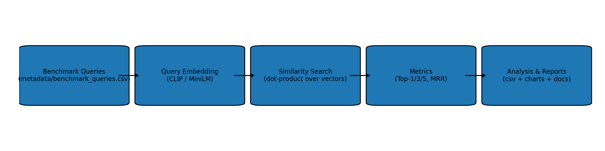
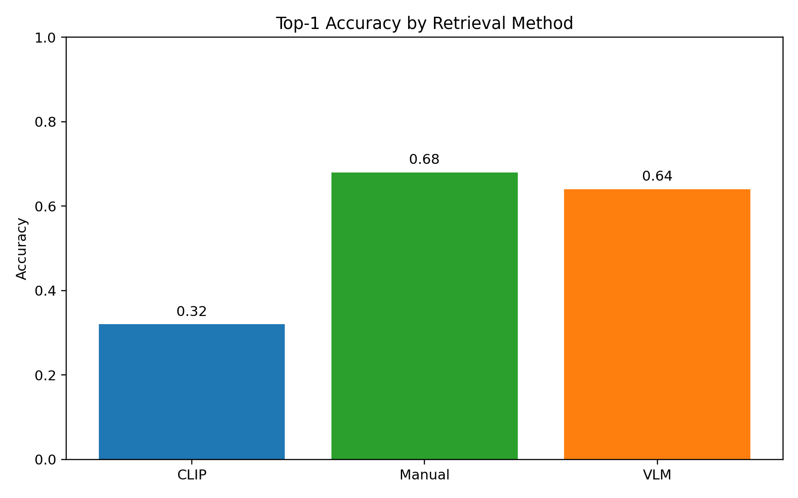
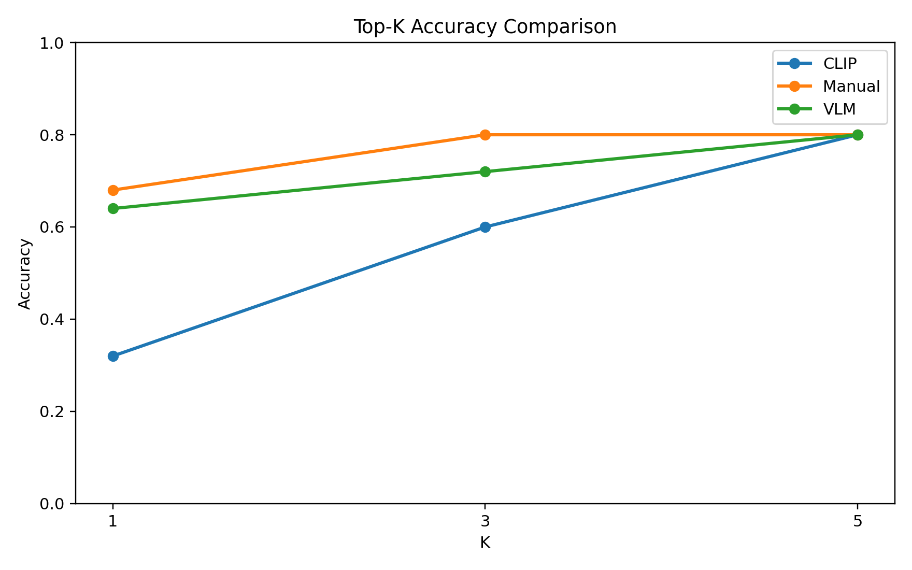
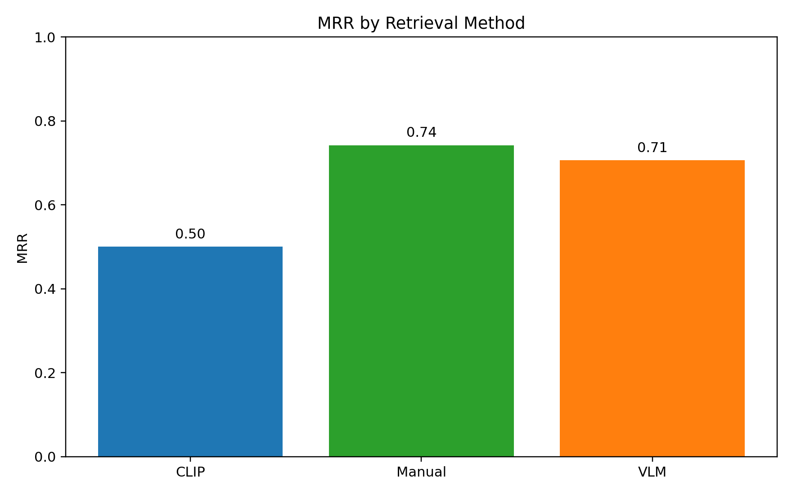
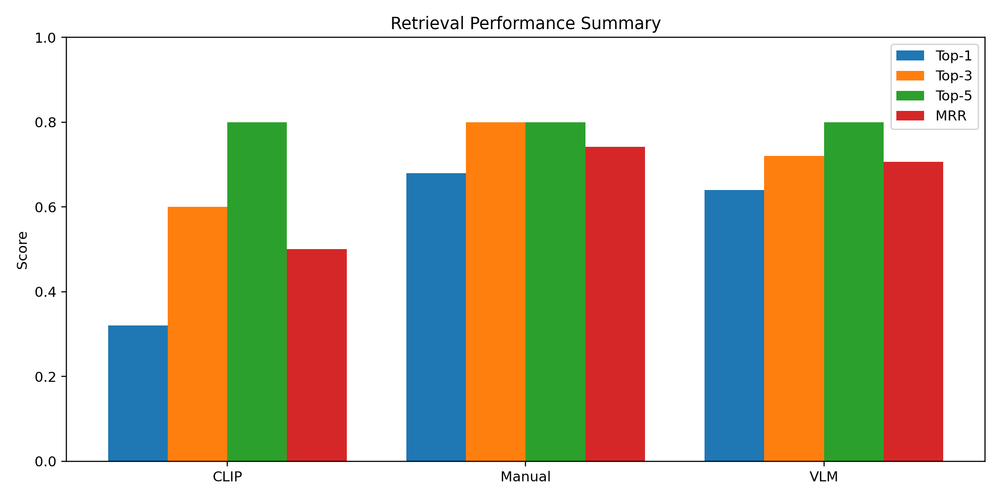

We benchmarked three retrieval approaches using repository-provided embeddings and benchmark queries, reporting Top-1/3/5 and MRR with complete reproducible outputs.

| method | top1_accuracy | top3_accuracy | top5_accuracy | mrr | top1_accuracy_pct | top3_accuracy_pct | top5_accuracy_pct |
|---|---|---|---|---|---|---|---|
| CLIP | 0.32 | 0.60 | 0.8 | 0.5000 | 32.0 | 60.0 | 80.0 |
| Manual | 0.68 | 0.80 | 0.8 | 0.7419 | 68.0 | 80.0 | 80.0 |
| VLM | 0.64 | 0.72 | 0.8 | 0.7062 | 64.0 | 72.0 | 80.0 |




| category | method | top1 | top3 | top5 | mrr |
|---|---|---|---|---|---|
| Ambience | CLIP | 0.0000 | 0.6000 | 0.8000 | 0.3452 |
| Ambience | Manual | 0.6000 | 0.6000 | 0.6000 | 0.6276 |
| Ambience | VLM | 0.2000 | 0.4000 | 0.6000 | 0.3667 |
| Dining Experience | CLIP | 0.4000 | 0.6000 | 0.6000 | 0.4827 |
| Dining Experience | Manual | 0.6000 | 0.6000 | 0.6000 | 0.6090 |
| Dining Experience | VLM | 0.4000 | 0.4000 | 0.6000 | 0.4577 |
| Food | CLIP | 0.4000 | 0.6000 | 0.8667 | 0.5574 |
| Food | Manual | 0.7333 | 0.9333 | 0.9333 | 0.8244 |
| Food | VLM | 0.8667 | 0.9333 | 0.9333 | 0.9022 |
| query | category | method | first_relevant_rank | top1_path |
|---|---|---|---|---|
| Sweet Kesari with dry fruits | Food | CLIP | 2.0 | Restaurant_food_datasets/Murugan_Idli_Shop/murugan_idli_shop_006.webp |
| Authentic idli sambar breakfast | Food | CLIP | 2.0 | Restaurant_food_datasets/Sangeetha_Veg_Restaurant/sangeetha_veg_restaurant_007.webp |
| Fine dining restaurant ambiance | Ambience | CLIP | 2.0 | Restaurant_food_datasets/southern_spice/southern_spice_005.webp |
| Traditional decor restaurant interior | Ambience | CLIP | 2.0 | Restaurant_food_datasets/southern_spice/southern_spice_014.webp |
| Flavorful Hyderabadi Veg Biryani | Food | CLIP | 3.0 | Restaurant_food_datasets/a2b/a2b_006.webp |
| Bright well-lit dining area | Ambience | CLIP | 3.0 | Restaurant_food_datasets/Dindigul_Thalappakatti/dindigul_thalappakatti_018.webp |
| Sunday brunch buffet | Dining Experience | CLIP | 3.0 | Restaurant_food_datasets/Absolute_Barbecues/absolute_barbecues_012.webp |
| Spicy Mutton Sukka | Food | CLIP | 4.0 | Restaurant_food_datasets/southern_spice/southern_spice_016.webp |
| Mini Idli with sambar dip | Food | CLIP | 4.0 | Restaurant_food_datasets/Sangeetha_Veg_Restaurant/sangeetha_veg_restaurant_007.webp |
| Spicy Chilli Chicken | Food | CLIP | 4.0 | Restaurant_food_datasets/Sangeetha_Veg_Restaurant/sangeetha_veg_restaurant_010.webp |
| Modern restaurant interior | Ambience | CLIP | 4.0 | Restaurant_food_datasets/Dindigul_Thalappakatti/dindigul_thalappakatti_005.webp |
| Kothu Parotta with salna | Food | CLIP | 5.0 | Restaurant_food_datasets/Murugan_Idli_Shop/murugan_idli_shop_005.webp |
Strongest method: Manual
Weakest method: CLIP
CLIP limitation summary: lower robustness than caption-based retrieval for text-heavy intent queries, particularly where fine-grained dish descriptors are needed.
The repository now contains a full evaluation phase with metrics CSVs, per-query results, publication charts, and research-style reporting artifacts.